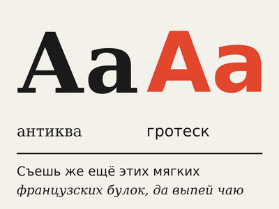

Типографика
Типографика — это искусство работы с текстом: выбор шрифта, размера, расстояний между буквами и строками.
Раздел 1. Классы шрифтов

- Антиква — шрифты с засечками
- подходят для длинного текста в книгах
- пример: Times New Roman, Georgia
- Гротеск — шрифты без засечек
- подходят для экранов и плакатов
- пример: Helvetica, Arial
- Моноширинные — все буквы одной ширины
- Рукописные и акцидентные
Раздел 2. Основные термины
- Кегль — размер шрифта
- Интерлиньяж — расстояние между строками
- Кернинг — расстояние между парой конкретных букв
- Трекинг — расстояние между всеми буквами в слове
Раздел 3. Простые правила
- Не больше двух шрифтов в одном макете
- Длина строки — 45–75 знаков
- Интерлиньяж основного текста — примерно 1,4–1,6 от кегля
- Заголовки отличаются от текста хотя бы по одному признаку
- размер
- начертание
- цвет